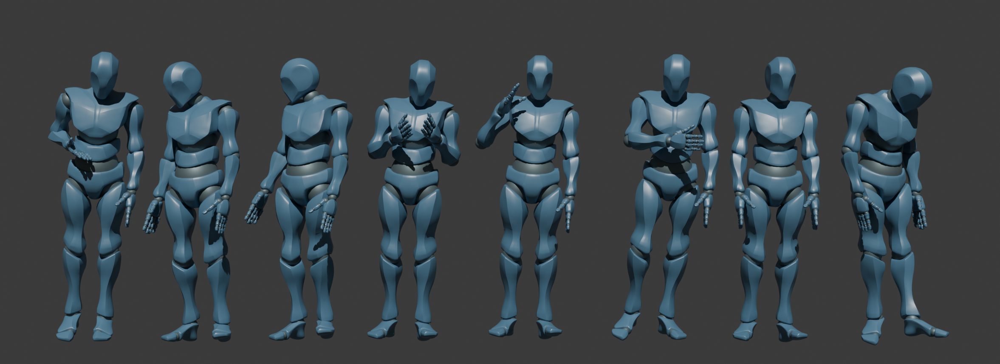

A Large-Scale 3D Idle Animation Dataset
Accepted at: Symposium on Computer Animation 2026

Idle animations are essential for virtual characters, as they convey realistic behaviour during inactive states. While automatic animation generation has been widely studied, limited attention has been given to idle motion due to the absence of dedicated training datasets. We introduce StayStill, a large-scale dataset of 3D idle animations comprising diverse motion types from 50 subjects, totalling approximately 6 hours of data. We also propose an evaluation protocol for both numerical and user-based metrics as a first step towards a standardised evaluation process for future systems. To facilitate future research, we publicly release StayStill along with the evaluation code and a pre-trained baseline model that generates idle animations via transition concatenation. We believe that these contributions will enable future research on idle motion generation.
@article{landa2026staystill,
author = {Atxa Landa, Eneko and Rodriguez, Igor and Lazkano, Elena and Kucherenko, Taras},
title = {StayStill: a large-scale 3D idle animation dataset},
journal = {Computer Graphics Forum},
year = {2026}
}